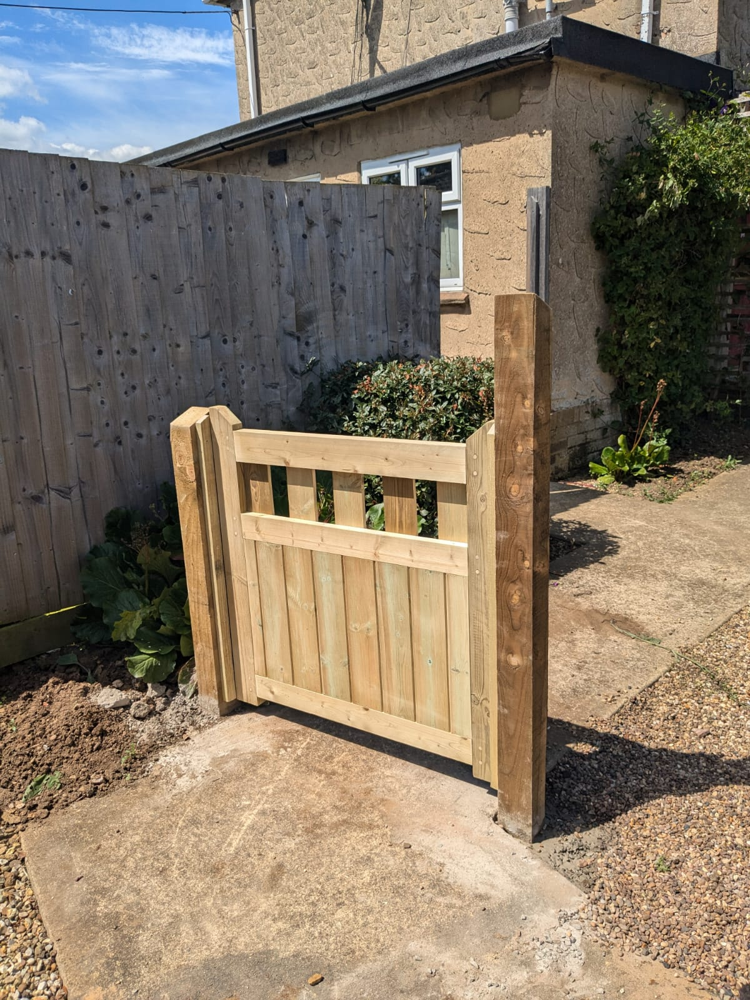
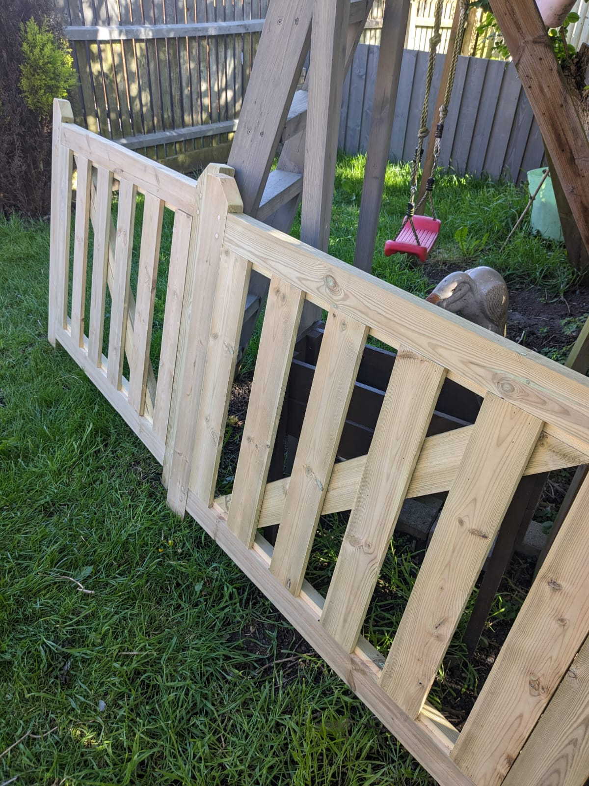

Hand Gates
QUALITY Made Garden Gates.
Mortice & Tenon Joints & Fully
Framed.
These gates are made from
quality timber, pressure treated so
can be left as they are or painted &
are T & G clad.
Made to measure.. just send me a
message of how wide & high you
want your gate & I will reply with a
quote.
Free delivery if in the Leicester/
shire area otherwise collection
only.
Fitting service available if in the
Leicester/shire area.
5-7 days turnaround.
Cash on delivery/collection.
Please no scams or couriers.

| 
|  | 
| 
|
Driveway Gates
Solid Driveway Gates Made To Measure.
Mortis & Tenon joints For Extra Strength.
Fully Framed & Pressure Treated.
Please message me for the size you require & I will give you a quote.
Free measuring up service if in the Leicester/shire area.
Fitting Service Available if in the Leicester/shire area.
Free delivery if in the Leicester/shire area otherwise collection only.
Cash on delivery/collection.
Please no scams/ couriers.
5-7 days turnaround.

| 
| 
| 
|  |
Side Gates
Quality Hand Made Garden Gates
Made To Measure.
Flat Top or Arched Top.
Ledge & Braced Pressure Treated
T & G.
Free Delivery if In The Leicester/shire area otherwise collection only.
Fitting Service Available but only in the Leicester/shire area.
Message me with the size of gate you require & I will message back with a quote.
Free measuring up service if in the Leicester/shire area.7-10 days turnaround.
Cash on collection/Delivery.
Please no scams couriers.

| 
| 
| 
| 
| 
|
If you are Interested in any of my fantastic products here are a few ways to contact me Click Here
to contact me on Facebook
Emailpipmyatt@yahoo.com
Phone Number07784440150
Back to Top